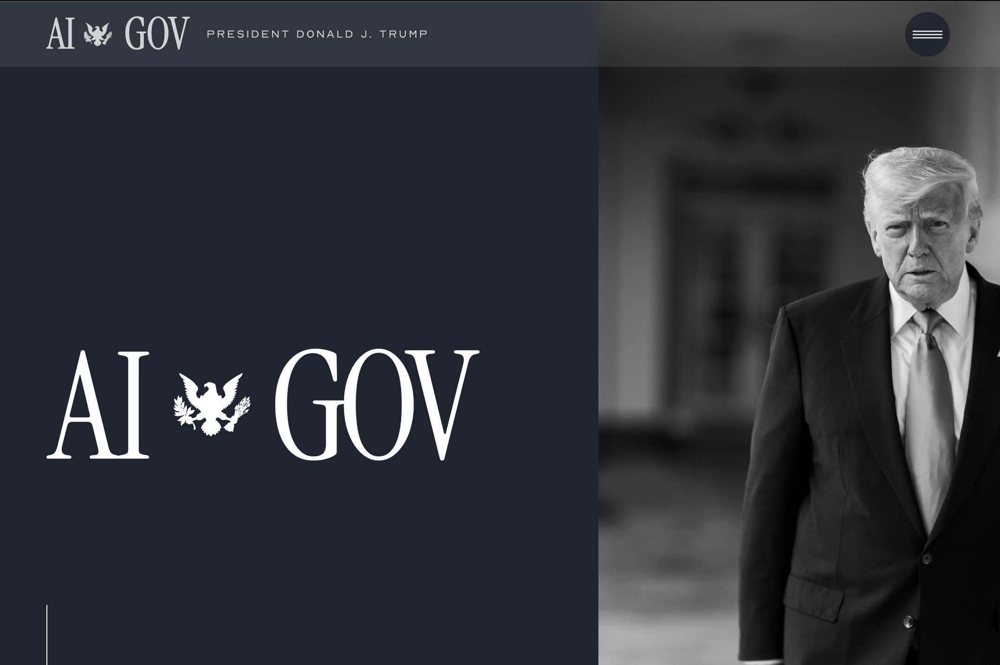
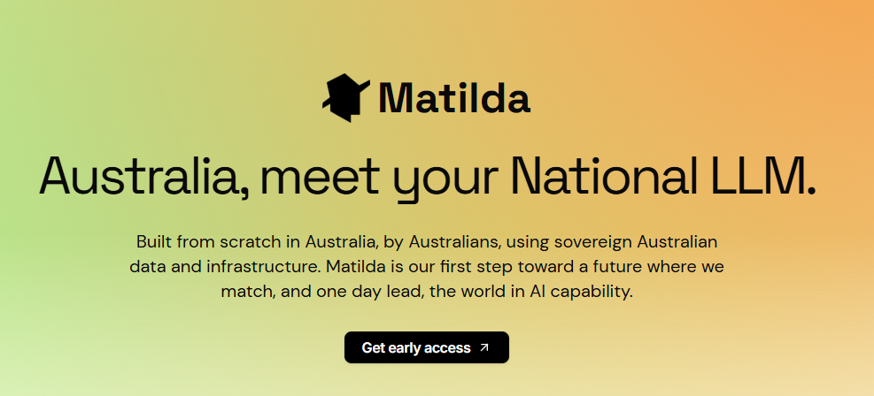

Global and National AI Policy Framework
The regulatory landscape for artificial intelligence is evolving quickly. Australia has built a framework that tries to balance innovation with safety, while internationally the approaches diverge sharply, from the European Union's risk-based regulation to the United States' recent shift toward deregulation.
Australia's National AI Plan (December 2025) stepped back from the earlier proposal for mandatory guardrails, choosing instead to rely on existing laws and sector regulators, supported by the voluntary Guidance for AI Adoption and a new Australian AI Safety Institute. The EU has delayed its high-risk obligations under a "Digital Omnibus" deal agreed in May 2026, and the United States has continued to roll back safety-focused regulation in favour of competition.
For Northern Territory organisations, understanding this environment is essential for responsible AI adoption. This module covers the key frameworks, recent developments, and practical implications for workplaces, educators and community members.
Australia's AI Ethics Principles
Australia's eight AI Ethics Principles, established in 2019, form the foundational framework for responsible AI development and deployment. They are voluntary, but serve as the cornerstone for more specific frameworks and assessments across government and industry.
- Human, societal and environmental wellbeing
- Human-centred values
- Fairness
- Privacy protection and security
- Reliability and safety
- Transparency and explainability
- Contestability
- Accountability
These principles prompt organisations to consider AI impacts systematically. They complement existing law, including the Privacy Act 1988, Australian Consumer Law, and sector-specific requirements, rather than replacing it.
Voluntary AI Safety Standard and the Step Back from Mandatory Guardrails
Australia's Voluntary AI Safety Standard was released in September 2024 and updated in October 2025 as the Guidance for AI Adoption. It aligns with international standards including ISO/IEC 42001:2023 and the NIST AI Risk Management Framework, and distils the original ten guardrails into six essential practices:
- Governance and accountability
- Impact assessment
- Risk management
- Transparency
- Testing and monitoring
- Human oversight
In September 2024 the government had proposed ten mandatory guardrails for high-risk AI. The National AI Plan, released in December 2025, set that direction aside. Australia is now relying on existing laws (privacy, consumer, copyright and sector rules), the voluntary six practices, and a new Australian AI Safety Institute for technical analysis and safety testing, rather than a standalone AI Act. Heading through 2026 it remains unlikely that Australia will introduce technology-specific AI legislation.
The standard still applies across the whole AI supply chain, including developers, deployers and integrators, and it specifically requires compliance with Indigenous Data Sovereignty principles, recognising First Nations peoples' rights to govern the collection, ownership and use of their data under Article 32(2) of the UN Declaration on the Rights of Indigenous Peoples.
Online Safety Act and AI Chatbot Regulation
The Online Safety Amendment (Social Media Minimum Age) Act 2024 bars Australians under 16 from social media platforms. It took effect on 10 December 2025, and platforms face fines up to $49.5 million for failing to take reasonable steps to prevent underage access.
eSafety action on AI chatbots
On 23 October 2025 the eSafety Commissioner issued legal notices to four AI companion chatbot operators (Character Technologies, Glimpse.AI, Chai Research Corp and Chub AI), requiring them to show compliance with the Basic Online Safety Expectations, including safeguards against child sexual exploitation, suicide ideation and self-harm content. The Phase 2 industry codes registered in September 2025 specifically address AI chatbot risks, with extra risk-assessment requirements for services that include AI companion features.
Age-restricted platforms (from 10 December 2025)
Facebook, Instagram, Kick, Reddit, Snapchat, Threads, TikTok, Twitch, X and YouTube must prevent under-16s from holding accounts. Exempted services include Discord, Messenger, WhatsApp, Roblox, and educational platforms like Google Classroom.
Australian Framework for Generative AI in Schools

The Australian Framework for Generative AI in Schools was approved by Education Ministers in October 2023 and implemented from Term 1, 2024. A review endorsed in June 2025 confirmed the framework remains fit for purpose, having accurately predicted emerging risks including deepfake content. It rests on six guiding principles:
- Teaching and learning
- Human and social wellbeing
- Transparency
- Fairness
- Accountability
- Privacy, security and safety
It was developed by the National AI in Schools Taskforce with representatives from all jurisdictions and school sectors, and it prioritises student data protection: generative AI tools should be used only in ways that respect privacy and data rights, comply with Australian law, avoid unnecessary data collection, limit retention, prevent distribution, and prohibit the sale of student data.
NT Government AI Assurance Framework
The Northern Territory Government released its AI Assurance Framework in 2024, establishing governance for AI use across NT Government agencies and implementing the National Framework for Assurance of AI in Government agreed at the Data and Digital Ministers Meeting in June 2024. Its ethics principles are community benefit, safety, fairness, privacy and security, transparency, and accountability, with decision-making remaining with people. All NT agencies using AI components or AI-driven tools must follow the framework, and high-risk assessments must go to the AI Advisory Board for mitigation advice.
Deepfakes: The Growing Threat to Trust
Deepfakes, AI-generated or manipulated video and audio that depicts real people doing or saying things they never did, are one of the most significant threats to digital trust. The technology has moved from academic curiosity to widespread accessibility in just a few years.
Who is most affected
Research from the UK regulator Ofcom shows the vast majority of sexually explicit deepfakes target women, many of whom suffer anxiety or trauma as a result. The technology has become a tool for harassment, blackmail and abuse, with victims often having little effective recourse under existing law. Deepfakes are also weaponised for identity fraud, sextortion, political disinformation and evidence tampering.
Detection is getting harder
A 2023 University of Waterloo study found that only 61 per cent of people could correctly identify AI-generated images, well below the anticipated 85 per cent. Detection tools exist (digital watermarking like Google's SynthID, metadata analysis, AI-based detectors), but determined bad actors can often circumvent them, and once content is shared on social media, verification becomes difficult and slow.
Be sceptical of sensational imagery during breaking news. Look for inconsistencies in lighting, shadows and reflections. Check multiple sources before sharing dramatic visual content, use reverse image search, and consider the source and motivation behind what you are seeing. Be aware that the latest deepfakes often overcome the older tells like unnatural blinking or poor lip-sync.
Australian Legislation: Protecting Faces and Voices
Australia is moving to address the deepfake threat through new legislation, though critics argue the response has been slow against rapidly evolving technology.
The "My Face, My Rights" Bill 2025
Independent Senator David Pocock introduced the Online Safety and Other Legislation Amendment (My Face, My Rights) Bill 2025 in November 2025. It would give Australians legal ownership of their face and voice, with safeguards against having their likeness copied for scams, disinformation and other harm. Its key provisions: a dedicated complaints-and-takedown regime under the Online Safety Act; powers for the eSafety Commissioner to demand removals and issue immediate fines; civil remedies allowing victims to sue for emotional harm; and penalties of up to $165,000 for individuals and $825,000 for companies that fail to comply with removal notices. It carves out journalism, satire and good-faith law enforcement.
The federal bill remains before the Senate and has not yet been passed as of mid-2026, so it is still subject to debate and amendment. At state level, the NSW Government passed the Crimes Amendment (Intimate Images and Audio Material) Bill 2025 in November 2025, making the production and sharing of sexually explicit deepfakes a criminal offence punishable by up to three years' imprisonment.
Senator Pocock put it this way: "It seems like a very sensible thing for Australians to be able to say, I own my face, this belongs to me, it is part of who I am. It should not just be whoever has the best software or the worst ethics to be able to deepfake someone and to use it on the internet." Similar laws already exist in China, Spain and Denmark; independent MP Kate Chaney has noted that the US, UK, Canada, Japan and Singapore all have equivalent protections that Australia currently lacks.
Are the proposed penalties enough to deter deepfake creation and distribution? How should legislation balance free speech against preventing harm? What role should AI companies play in preventing misuse? And how can law keep pace with the technology?
While the federal bill is pending, review your own policies on AI-generated content, run staff training on deepfake awareness, and prepare incident-response procedures for when staff or stakeholders are targeted.
Read more: My Face, My Rights Bill (Parliament), InnovationAus analysis, NSW Government announcement.
EU Artificial Intelligence Act
The EU AI Act (Regulation 2024/1689) is the world's first comprehensive legal framework for AI. Enacted in June 2024, it sets global precedents through the "Brussels Effect", where EU rules become de facto international standards. Its prohibited practices, in force since February 2025, include subliminal manipulation, exploitation of vulnerabilities, social scoring, untargeted facial-recognition scraping, emotion recognition in workplaces and schools, biometric categorisation by protected characteristics, predictive policing by profiling, and real-time remote biometric identification (with limited exceptions).
In May 2026 the EU Council and Parliament agreed a "Digital Omnibus" package that delays the most onerous high-risk obligations. Requirements for stand-alone high-risk systems (Annex III) are deferred from August 2026 to 2 December 2027, and for AI embedded in regulated products (Annex I) to August 2028, while harmonised standards and national authorities catch up. The package also adds a new prohibition on AI-generated non-consensual intimate imagery ("nudifiers") and child sexual abuse material. Prohibited practices and the general-purpose AI model rules (in force since August 2025) remain in place.
Maximum penalties reach EUR 35 million or 7 per cent of global annual turnover. The Act applies extraterritorially to AI placed on EU markets or whose outputs are used in the EU, so Australian organisations operating in EU markets should plan for the more stringent requirements.
EU Council: agreement to simplify the AI rules (May 2026) · Read the Act
US Policy Shift: From Safety to Competition

On 20 January 2025 President Trump rescinded Biden's Executive Order 14110 on safe, secure and trustworthy AI, and on 23 January 2025 issued Executive Order 14148, "Removing Barriers to American Leadership in Artificial Intelligence". The order suspends Chief AI Officer appointments, AI governance boards and safety-focused compliance efforts established under the previous administration, and seeks AI development "free from ideological bias". The administration's AI action plan prioritises removing regulatory barriers, expanding domestic AI infrastructure, and promoting American AI as the global standard. This creates a clear divergence with the EU's risk-based approach.
For Australia, this matters: the government has signalled it will continue with its own approach despite US pushback, and Australia's closer alignment with the EU's precautionary stance creates compliance complexity for organisations operating across jurisdictions.
Geopolitical AI Competition and Data Sovereignty
The global AI landscape is increasingly shaped by tension between major powers. China's framework emphasises state control and ideological conformity, requiring AI systems to reflect "Socialist core values" and undergo security assessments by the Cyberspace Administration.
Australia bans DeepSeek (February 2025)
The Home Affairs Secretary determined that DeepSeek posed "an unacceptable level of security risk" given extensive data collection and potential exposure to foreign-government direction conflicting with Australian law. DeepSeek's privacy policy reveals collection of keystrokes, device identifiers, usage patterns and payment data stored in China. These competing visions create real compliance challenges: organisations must navigate conflicting requirements across jurisdictions, with privacy laws limiting AI training in some places while other regimes use AI regulation as a tool for social control.
Indigenous Data Sovereignty and AI
Indigenous Data Sovereignty is the right of Aboriginal and Torres Strait Islander peoples to exercise ownership over Indigenous data, including its creation, collection, access, analysis, interpretation, management, dissemination and reuse, about their communities, knowledge systems and territories. It is guided by the CARE principles:
- Collective benefit. Data should benefit Indigenous communities.
- Authority to control. Indigenous peoples have the right to govern their data.
- Responsibility. Those working with the data are responsible to communities.
- Ethics. Indigenous peoples' rights and wellbeing are the primary concern.
The Global Indigenous Data Sovereignty Conference 2025, held on Ngunnawal Country in April, brought together Indigenous peoples worldwide to map future pathways for data governance. Australia's Framework for Governance of Indigenous Data, developed by the NIAA, guides organisations handling Indigenous data. Without active Indigenous participation in AI governance, systems risk perpetuating cultural erasure and data exploitation; First Nations data about Country, language, people or community cannot be treated as "open data" for AI use without appropriate governance.
Framework for Governance of Indigenous Data (NIAA) · UN: Indigenous sovereignty in the AI era
Content Authenticity Initiative (C2PA)
The Content Authenticity Initiative, founded in 2019 by Adobe, The New York Times and Twitter, promotes an industry standard for content provenance metadata known as Content Credentials. The Coalition for Content Provenance and Authenticity (C2PA) develops the technical specifications, with over 200 members. Content Credentials work like a "nutrition label" for digital content: a tamper-evident record of a file's origin, creation device, time and editing history, secured with hashes and certified digital signatures so unauthorised changes are detectable.
Major platforms including LinkedIn and Meta are integrating Content Credentials, camera makers Leica and Nikon embed provenance data in images, and in June 2025 Sony announced its Camera Verify system for press photographers. The specification is being fast-tracked as an ISO standard. One limit to keep in mind: Content Credentials cannot verify whether content is true, only where it came from, and manifests can be stripped from files (though manifest repositories help). They are one part of a wider approach alongside education, policy and detection.
Australian Sovereign AI Development

Australian organisations are building local AI capability to reduce dependence on foreign platforms. Melbourne-based Maincode demonstrated its "Matilda" platform at SXSW Sydney in October 2025, describing it as an Australian-made large language model built from scratch on local infrastructure. The benefits it points to are economic (keeping investment and high-value jobs onshore), data sovereignty (sensitive information never leaving the country), regulatory alignment with Australian standards, and national resilience against foreign platforms subject to changing terms or foreign law.
Maincode has shifted from "sovereign AI" to "Australian-made AI", acknowledging the need for international collaboration while keeping local control; it uses AMD infrastructure and runs its own GPU facilities. The security driver is real: many overseas AI services are subject to laws like the US CLOUD Act, which can compel access to data held by American companies even about Australians stored offshore, a significant risk for healthcare, law, finance and defence.
CDU Internal Policies
In February 2025 Charles Darwin University published its first dedicated Generative Artificial Intelligence Policy, establishing principles for responsible generative AI use across teaching, learning, research and operations. Alongside it, the University operates comprehensive internal policies across information security, ICT acceptable use, privacy and copyright, aligned with both Commonwealth and NT government frameworks while addressing the higher education sector's particular needs: academic freedom, research integrity, student privacy, assessment validity and industry collaboration.
- Generative AI Policy. Principles for responsible use, platforms, integrity, data privacy, teaching and learning, and research.
- ICT Acceptable Use. Governs staff and student use of university ICT resources, including AI tools.
- Information Security. Protects university data and systems in AI implementations.
- Privacy and Confidentiality. Privacy obligations when AI tools process personal information.
- Copyright. Intellectual property considerations when using AI for content and research.